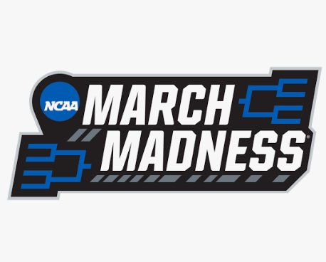

IT Intern with IU Athletics
What it's like supporting technology behind the scenes for Indiana University Athletics.
Projects, ideas, and things I am learning
What it's like supporting technology behind the scenes for Indiana University Athletics.
Starting with classic ethical theory and applying it to AI, privacy, and tech's biggest questions.

I had Claude, ChatGPT, and Gemini each fill out a bracket using stats instead of seeds.
My thoughts on Comic Sans. One of the greatest fonts to exist.